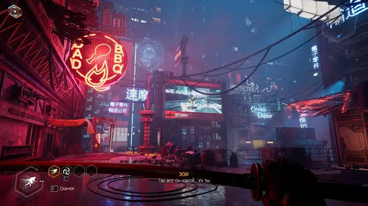

Ghostrunner — Википедия
Об игре
Ghostrunner — это экшен от первого лица в стиле слэшер, разработанный польской студией One More Level и изданный 505 Games. Игра была выпущена 27 октября 2020 года для платформ PC, PlayStation 4 и Xbox One. Позже игра получила версии для PlayStation 5 и Xbox Series X/S.
В роли Ghostrunner, игрок должен преодолевать опасные препятствия с помощью приёмов паркура: рывков, прыжков, бегая по стенам, а также побеждать противников, встающих на его пути. Столкновения с врагами сопряжено с серьёзной опасностью, так как и враги, и игрок могут быть убиты одним ударом. Игрок может использовать способность под названием «Сверхрефлекс», позволяющую ему замедлять время, уклоняться и отклонять пули в воздухе. По мере прохождения сюжета игрок будет открывать новые способности и улучшения, которые он сможет применять
Основные особенности
- Молниеносный геймплей с механикой «убей или будь убит»
- Короткосрочное замедление времени в воздухе для точного планирования атак
- Мгновенная смерть — каждое столкновение фатально
- Киберпанк-эстетика и мрачная атмосфера
Системные требования (PC)
| Параметр | Минимальные | Рекомендуемые |
|---|---|---|
| ОС | Windows 10 64-bit | Windows 10 64-bit |
| Процессор | Intel Core i5-2500К | Intel Core i7-6700К |
| Оперативная память | 8 ГБ | 8 ГБ |
| Видеокарта | NVIDIA GTX 1050 2GB | NVIDIA GTX 970 4GB |
| DirectX | Версия 11 | Версия 11 |
| Место на диске | 22 ГБ | 22 ГБ |
Скриншот из игры

Действие Ghostrunner происходит в вымышленном мире будущего в стилистике киберпанка. В связи с экологическими катастрофами человечество не может обитать на поверхности планеты без вреда здоровью. Людям пришлось ютиться в огромном городе-башне которую называют Дхарма.